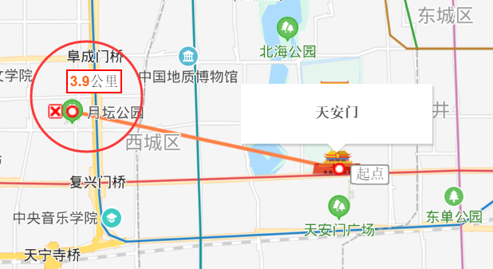

- 01 Redis 是如何执行的.md
- 02 Redis 快速搭建与使用.md
- 03 Redis 持久化——RDB.md
- 04 Redis 持久化——AOF.md
- 05 Redis 持久化——混合持久化.md
- 06 字符串使用与内部实现原理.md
- 07 附录：更多字符串操作命令.md
- 08 字典使用与内部实现原理.md
- 09 附录：更多字典操作命令.md
- 10 列表使用与内部实现原理.md
- 11 附录：更多列表操作命令.md
- 12 集合使用与内部实现原理.md
- 13 附录：更多集合操作命令.md
- 14 有序集合使用与内部实现原理.md
- 15 附录：更多有序集合操作命令.md
- 16 Redis 事务深入解析.md
- 17 Redis 键值过期操作.md
- 18 Redis 过期策略与源码分析.md
- 19 Redis 管道技术——Pipeline.md
- 20 查询附近的人——GEO.md
- 21 游标迭代器（过滤器）——Scan.md
- 22 优秀的基数统计算法——HyperLogLog.md
- 23 内存淘汰机制与算法.md
- 24 消息队列——发布订阅模式.md
- 25 消息队列的其他实现方式.md
- 26 消息队列终极解决方案——Stream（上）.md
- 27 消息队列终极解决方案——Stream（下）.md
- 28 实战：分布式锁详解与代码.md
- 29 实战：布隆过滤器安装与使用及原理分析.md
- 30 完整案例：实现延迟队列的两种方法.md
- 31 实战：定时任务案例.md
- 32 实战：RediSearch 高性能的全文搜索引擎.md
- 33 实战：Redis 性能测试.md
- 34 实战：Redis 慢查询.md
- 35 实战：Redis 性能优化方案.md
- 36 实战：Redis 主从同步.md
- 37 实战：Redis哨兵模式（上）.md
- 38 实战：Redis 哨兵模式（下）.md
- 39 实战：Redis 集群模式（上）.md
- 40 实战：Redis 集群模式（下）.md
- 41 案例：Redis 问题汇总和相关解决方案.md
- 42 技能学习指南.md
- 43 加餐：Redis 的可视化管理工具.md
20 查询附近的人——GEO
受过高等教育的我们都知道，我们所处的任何位置都可以用经度和纬度来标识，经度的范围 -180 到 180，纬度的范围为 -90 到 90。纬度以赤道为界，赤道以南为负数，赤道以北为正数；经度以本初子午线（英国格林尼治天文台）为界，东边为正数，西边为负数。
Redis 在 3.2 版本中增加了 GEO 类型用于存储和查询地理位置，关于 GEO 的命令不多，主要包含以下 6 个：
- geoadd：添加地理位置
- geopos：查询位置信息
- geodist：距离统计
- georadius：查询某位置内的其他成员信息
- geohash：查询位置的哈希值
- zrem：删除地理位置
下面我们分别来看这些命令的使用。
基础使用
添加地理位置
我们先用百度地图提供的经纬度查询工具，地址：
如下图所示：
找了以下 4 个地点，添加到 Redis 中：
- 天安门：116.404269,39.913164
- 月坛公园：116.36,39.922461
- 北京欢乐谷：116.499705,39.874635
- 香山公园：116.193275,39.996348
代码如下：
127.0.0.1:6379> geoadd site 116.404269 39.913164 tianan
(integer) 1
127.0.0.1:6379> geoadd site 116.36 39.922461 yuetan
(integer) 1
127.0.0.1:6379> geoadd site 116.499705 39.874635 huanle
(integer) 1
127.0.0.1:6379> geoadd site 116.193275 39.996348 xiangshan
(integer) 1
相关语法：
geoadd key longitude latitude member [longitude latitude member ...]
重点参数说明如下：
- longitude 表示经度
- latitude 表示纬度
- member 是为此经纬度起的名字
此命令支持一次添加一个或多个位置信息。
查询位置信息
127.0.0.1:6379> geopos site tianan
1) 1) "116.40541702508926392"
2) "39.91316289865137179"
相关语法：
geopos key member [member ...]
此命令支持查看一个或多个位置信息。
距离统计
127.0.0.1:6379> geodist site tianan yuetan km
"3.9153"
可以看出天安门距离月坛公园的直线距离大概是 3.9 km，我们打开地图使用工具测试一下咱们的统计结果是否准确，如下图所示：

可以看出 Redis 的统计和使用地图工具统计的距离是完全吻合的。
注意：此命令统计的距离为两个位置的直线距离。
相关语法：
geodist key member1 member2 [unit]
unit 参数表示统计单位，它可以设置以下值：
- m：以米为单位，默认单位；
- km：以千米为单位；
- mi：以英里为单位；
- ft：以英尺为单位。
查询某位置内的其他成员信息
127.0.0.1:6379> georadius site 116.405419 39.913164 5 km
1) "tianan"
2) "yuetan"
此命令的意思是查询天安门（116.405419,39.913164）附近 5 公里范围内的成员列表。
相关语法：
georadius key longitude latitude radius m|km|ft|mi [WITHCOORD] [WITHDIST] [WITHHASH] [COUNT count] [ASC|DESC]
可选参数说明如下。
1. WITHCOORD
说明：返回满足条件位置的经纬度信息。
示例代码：
127.0.0.1:6379> georadius site 116.405419 39.913164 5 km withcoord
1) 1) "tianan"
2) 1) "116.40426903963088989"
2) "39.91316289865137179"
2) 1) "yuetan"
2) 1) "116.36000186204910278"
2) "39.92246025586381819"
2. WITHDIST
说明：返回满足条件位置与查询位置的直线距离。
示例代码：
127.0.0.1:6379> georadius site 116.405419 39.913164 5 km withdist
1) 1) "tianan"
2) "0.0981"
2) 1) "yuetan"
2) "4.0100"
3. WITHHASH
说明：返回满足条件位置的哈希信息。
示例代码：
127.0.0.1:6379> georadius site 116.405419 39.913164 5 km withhash
1) 1) "tianan"
2) (integer) 4069885552230465
2) 1) "yuetan"
2) (integer) 4069879797297521
4. COUNT count
说明：指定返回满足条件位置的个数。
例如，指定返回一条满足条件的信息，代码如下：
127.0.0.1:6379> georadius site 116.405419 39.913164 5 km count 1
1) "tianan"
5. ASC|DESC
说明：从近到远|从远到近排序返回。
示例代码：
127.0.0.1:6379> georadius site 116.405419 39.913164 5 km desc
1) "yuetan"
2) "tianan"
127.0.0.1:6379> georadius site 116.405419 39.913164 5 km asc
1) "tianan"
2) "yuetan"
当然以上这些可选参数也可以一起使用，例如以下代码：
127.0.0.1:6379> georadius site 116.405419 39.913164 5 km withdist desc
1) 1) "yuetan"
2) "4.0100"
2) 1) "tianan"
2) "0.0981"
5. 查询哈希值
127.0.0.1:6379> geohash site tianan
1) "wx4g0cgp000"
相关语法：
geohash key member [member ...]
此命令支持查询一个或多个地址的哈希值。
6. 删除地理位置
127.0.0.1:6379> zrem site xiaoming
(integer) 1
相关语法：
zrem key member [member ...]
此命令支持删除一个或多个位置信息。
代码实战
下面我们用 Java 代码，来实现查询附近的人，完整代码如下：
import redis.clients.jedis.GeoCoordinate;
import redis.clients.jedis.GeoRadiusResponse;
import redis.clients.jedis.GeoUnit;
import redis.clients.jedis.Jedis;
import java.util.HashMap;
import java.util.List;
import java.util.Map;
public class GeoHashExample {
public static void main(String[] args) {
Jedis jedis = new Jedis("127.0.0.1", 6379);
Map<String, GeoCoordinate> map = new HashMap<>();
// 添加小明的位置
map.put("xiaoming", new GeoCoordinate(116.404269, 39.913164));
// 添加小红的位置
map.put("xiaohong", new GeoCoordinate(116.36, 39.922461));
// 添加小美的位置
map.put("xiaomei", new GeoCoordinate(116.499705, 39.874635));
// 添加小二
map.put("xiaoer", new GeoCoordinate(116.193275, 39.996348));
jedis.geoadd("person", map);
// 查询小明和小红的直线距离
System.out.println("小明和小红相距：" + jedis.geodist("person", "xiaoming",
"xiaohong", GeoUnit.KM) + " KM");
// 查询小明附近 5 公里的人
List<GeoRadiusResponse> res = jedis.georadiusByMemberReadonly("person", "xiaoming",
5, GeoUnit.KM);
for (int i = 1; i < res.size(); i++) {
System.out.println("小明附近的人：" + res.get(i).getMemberByString());
}
}
}
以上程序执行的结果如下：
小明和小红相距：3.9153 KM
小明附近的人：xiaohong
应用场景
Redis 中的 GEO 经典使用场景如下：
- 查询附近的人、附近的地点等；
- 计算相关的距离信息。
小结
GEO 是 Redis 3.2 版本中新增的功能，只有升级到 3.2+ 才能使用，GEO 本质上是基于 ZSet 实现的，这点在 Redis 源码找到相关信息，我们可以 GEO 使用实现查找附近的人或者附近的地点，还可以用它来计算两个位置相隔的直线距离。